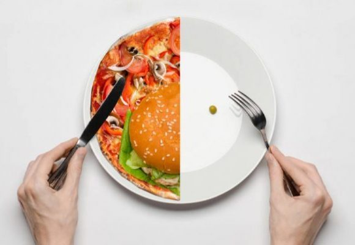

3. Trastorno alimentario compulsivo: cuando tienes el trastorno alimentario compulsivo, habitualmente comes en exceso (atracón) y tienes la sensación de pérdida de control sobre lo que comes. Puedes comer con rapidez o consumir más alimentos de los que tienes pensado, incluso cuando no tienes apetito, y seguir comiendo mucho tiempo después de sentirte demasiado lleno. Después de un atracón, puedes sentir culpa, enojo o vergüenza por la conducta y por la cantidad de alimentos consumidos. Sin embargo, no intentas compensar esta conducta con el ejercicio desmesurado o la purga, tal como lo haría una persona bulímica o anoréxica. La vergüenza puede provocar que comas solo para ocultar tus atracones. Por lo general, se produce una nueva ronda de atracones por lo menos una vez a la semana. Puedes tener un peso normal, sobrepeso u obesidad. El trastorno alimentario compulsivo es el tipo de trastorno alimentario más común en los Estados Unidos. La gente con trastorno alimentario compulsivo a menudo se siente fuera de control y come grandes cantidades de comida de una vez (lo que se dice un atracón). Las señales de un trastorno alimentario que necesita tratamiento incluyen atracones, preocupación o vergüenza por las conductas alimentarias, hábitos alimentarios secretos, preocupación por el peso o la imagen del cuerpo, o un peso corporal no saludable debido a problemas de alimentación.
Trastorno de rumiación
El trastorno de rumiación es la regurgitación repetida y continua de los alimentos después de comer, pero que no se debe a una enfermedad ni a otro trastorno de la alimentación, como anorexia, bulimia o trastorno alimentario compulsivo. La comida vuelve a la boca sin náuseas ni arcadas, y puede que la regurgitación no sea intencional. A veces, los alimentos que se regurgitan se mastican nuevamente y se vuelven a tragar, o bien se escupen.
El trastorno puede derivar en desnutrición, si los alimentos se escupen o si la persona come mucho menos para evitar la conducta. El trastorno de rumiación puede ser más frecuente en los niños pequeños o en las personas que tienen una discapacidad intelectual. Afección en la que una persona expulsa la comida del estómago, vuelve a masticarla y la traga de nuevo o la escupe. Suele ocurrir en un período de 30 minutos después de cada comida. Se desconoce la causa.
El síndrome de rumiación es una enfermedad en la que las personas devuelven (regurgitan) del estómago los alimentos no digeridos o parcialmente digeridos de manera repetida e involuntaria, los mastican de nuevo y luego los vuelven a deglutir o los escupen.